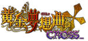

| 通常技 | ||
| 弱 | a | |
| 中 | b | |
| 強 | c | |
| 特殊技 | ||
| 特殊技（飛び込み蹴り） | → + b | |
| 特殊技（札束でひっぱたく） | → + c | |
| 特殊技（ボディプレス） | 空中で ↓ + c | |
| 必殺技 | ||
| さくたろう召喚 | ↓↘→ + a or b or c ① | |
| 行って、さくたろ！ | ①後 ↓↘→ + a or b or c （空中可） | |
| 七姉妹召喚 | ←↓↙ + a （レヴィアタン召喚） | |
| ←↓↙ + b （ベルフェゴール召喚） | ||
| ←↓↙ + c （サタン召喚） | ||
| マモン召喚 | ↓↙← + a or b or c | |
| ジャーマンスープレックス | →↘↓↙← + a or b or c | |
| SP必殺技 | ||
| ずっこけ、さくたろ！ | ①後 ↓↘→ + a+b （空中可） | 1ゲージ消費 |
| ベルゼブブ・アスモデウス召喚 | ←↓↙ + a+b | 1ゲージ消費 |
| 七杭召喚 | ↓↙← + a+b | 1ゲージ消費 |
| ダブルジャーマンスープレックス | →↘↓↙← + a+b | 1ゲージ消費 |
| 乱舞技 | ||
| エンジェリック・ランブル | ↓↘→↓↘→ + c | 2ゲージ消費 |
| メタ必殺技 | ||
| シーユーアゲイン | メタ世界展開中 →←↙↓↘→ + c | |
| 協力必殺技 | ||
| 黄金の真実 | アサルトタッチパワードがヒット | パートナー"右代宮戦人"選択 |
| 煉獄の七姉妹 | パートナー"ルシファー"選択 | |
| 絶対守護障壁 | パートナー"紗音"選択 | |
| 乙女のたしなみだぜ！ 今日は集まってくれてありがとォ！ |
パートナー"右代宮朱志香"選択 | |
| 王者の教え | パートナー"右代宮譲治"選択 | |
| 縁寿の選択～手品 | パートナー"古戸ヱリカ"選択 | |
| 愛なき幻想を禁ず | パートナー"ウィラード・H・ライト"選択 | |
| ダブルエンジェリック・ランブル | パートナー"右代宮縁寿"選択 | |
※ 『協力必殺技』は原作にはないオリジナルの超必殺技です。
『アサルトタッチパワード』がヒットした後、自動的に発動します。
また、『乙女のたしなみだぜ！今日は集まってくれてありがとォ！』はブリス技となっています。
| システム | ||
| ダッシュ | →→ | |
| バックステップ | ←← | |
| ハイジャンプ | ↓ 後 ↑ or ↗ or ↖ | |
| タッチ ※1 | x （ノーマルタッチ） | タッチゲージ消費 ※4 |
| 通常攻撃ヒット中 x （アタックタッチ） | タッチゲージ消費 | |
| ガード中 x （ガードタッチ） | タッチゲージ+パートナーSPゲージ1消費 | |
| ガード中 → + x （ガードタッチフォワード） | タッチゲージ+パートナーSPゲージ1消費 | |
| 地上でダメージ中 x （ダメージタッチ） | タッチゲージ+パートナーSPゲージ2消費 | |
| ↓↘→ + x （アサルトタッチ） ※2 | タッチゲージ+パートナーSPゲージ2消費 | |
| ↓↘→ + a+x （アサルトタッチパワード） ※3 | タッチゲージ+パートナーSPゲージ3以上消費 +縁寿のSPゲージ3消費 |
|
| メタ世界 | メタゲージが赤い状態で a+b+c or z （メタ宣言） | 1ゲージ消費 |
| 縁寿がメタ宣言中 いずれかのボタン （メタ返し） ※相手のみ |
総パワーゲージの5分の2消費 （相手） | |
| 相手がメタ返し中 a+b+c or z （メタ再展開） | 2ゲージ消費 | |
| 縁寿がメタ再展開中 いずれかのボタン （メタ再反論） ※相手のみ |
総パワーゲージの5分の2消費 （相手） | |
| 相手がメタ再反論中 a+b+c or z （メタ強制展開） | 2ゲージ消費 | |
| ダッシュキャンセル | 強攻撃がヒットした瞬間に →→ | タッチゲージ消費 |
| アピール | y | |
| 投げ | b+c | |
| 投げ弾き | 投げがヒットした瞬間に b+c （相手のみ） | |
| 受身 | 空中でダウン中 攻撃ボタン | |
| パートナーセレクト | |
| パートナーセレクト | イントロ中 方向キー （パートナー選択） |
| start （決定） | |
| 黄金モード | |
| 黄金モード起動 | イントロ中 start長押し |
※ パートナーセレクト及び黄金モードの起動はイントロ中のみ可能です。
author "ゆ～とはる"
SHAKE'S DREAM
http://shakesdream.web.fc2.com/